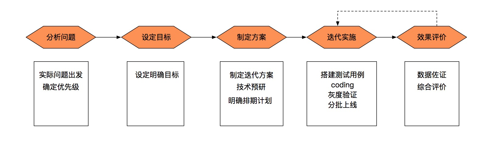
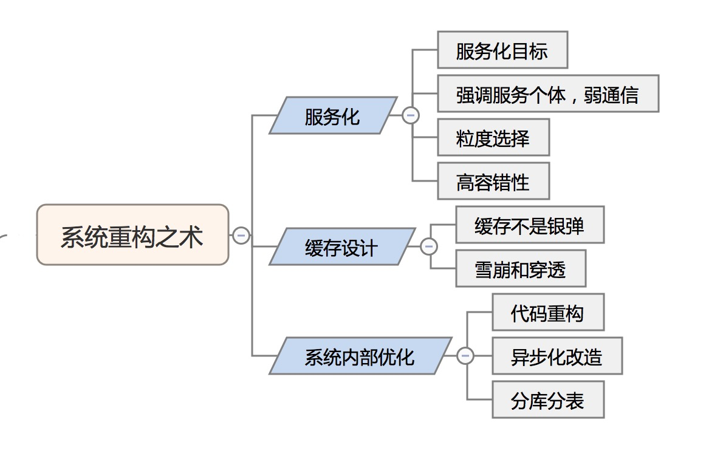
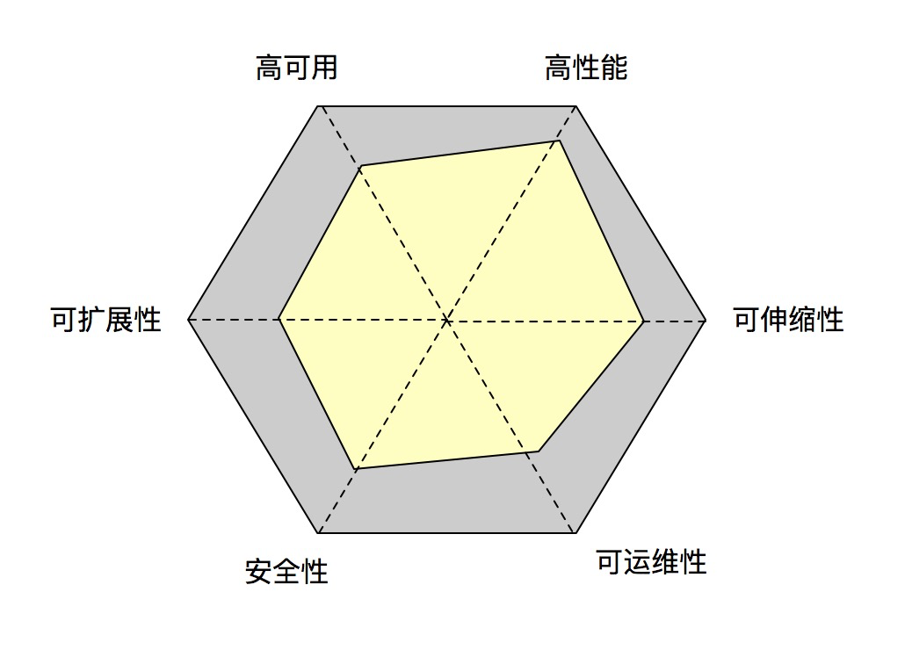

最近参与了很多重构项目，有以提高服务器资源利用率为目标的Gateway网关、AMAPS等服务的重构，也有以提升架构合理性和研发效率为目标的共享业务服务化拆分，借此机会把相关内容梳理一下，是分享更是自我总结和学习。准备以重构工作中容易产生误区的地方或容易被忽视的重点来聊聊，既不重复网上千篇一律的各种方案资料，也对重构工作有参考价值。
什么是“道和术”？个人简单的理解，道就是思想，术是方法。可谓有道无术，术尚可求也；有术无道，止于术。分别从重构的基本思路和原则，以及常见重构方案的应用来分别讲讲系统重构的“道与术”。
一、系统重构之道
现在是进行重构的恰当时机吗？重构前需要做什么准备？如何保障重构工作顺利完成并达成预期目标？从这几个大家都关心的问题，来谈谈重构工作遵循的基本思路和原则。

从实际问题出发
“不能解决实际问题的重构就是耍流氓 ”，从实际问题出发，切勿为了重构而重构，看似简单的道理，但现实中确实存在为了重构而发起的重构，或许是想应用诱人的新技术，或许是为了跟上流行趋势，甚至有自己主动YY需求而发起的重构。作为工程师我们需要谨记系统稳定高于一切，任何重构都存在风险，没有业务收益的重构相当于平白让业务承担非必要的风险，这是一种极不负责的表现。
所以，发起重构项目时，先想明白要解决什么实际问题，是为了提升性能？还是加强安全？或是为了快速的持续集成和发布？想明白再行动。
设定明确目标
目标是否明确很大程度上决定了事情的最终效果，重构项目也是如此。在组织管理、目标管理课程上经常会提及目标设定的SMART原则，同样，重构项目也要有具体的、可衡量、可执行、可实现、且有时间限制的目标，可执行、可实现、且有时间限制这三者好理解，重点讲讲具体可衡量，上面提到的待解决问题可不可以作为重构项目的目标吗？答案不可以，问题就出在具体可衡量上，就拿以解决性能问题的重构项目为例，目标应该是服务响应RT要降多少? 或是单核QPS承载量提升多少？甚至也可以是服务器资源减少多少？这才是具体可衡量的目标。
那有些不好量化的目标怎么做到可衡量呢？拿提升服务高可用性为目的的重构项目为例，目标确实不好量化，针对这样的问题可以以具体事件为衡量标准，比如实现机房故障用户无感知，或底层故障自动降级和恢复等 （系统高可用经常使用几个9的指标来评定，但它是一个事后采集指标，用作指导中短周期项目目标并不适合）。
阿里内部经常会提到工作抓手，而这个具体可衡量的目标就是我们重构工作的抓手。
设计要有度
“设计不足”和“过度设计”一样都是设计失误，设计不足是因为缺乏必要的抽象思维和前瞻性思考，使得系统存在设计缺陷；而过度设计往往是对系统问题把脉不清，偏离实际需求过度追求扩展性而引入了多余的设计，过度设计的结果并不只是并没什么用处的扩展功能，更多时候它会带来一些新的问题，比如增加系统维护和迭代的成本、增加线上问题排查难度等等。
设计要有度除了设计不足和过度设计外，还有一个成本收益的层面需要考虑，可能有些设计的引入能解决一部分问题，但它方案过于复杂，实施成本过高，这时候就需要从收益产出比上去权衡是否要采纳。
设计不足几乎没有捷径，需要不断的学习和经验积累。而过度设计，需要我们在做设计方案时多想一想相关设计的必要性以及成本收益问题。
小步快走
提前做好迭代计划是在重构工作中容易被忽略的重要事项，重构方案设计之初就要考虑如何分阶段实施，甚至为了达到分阶段目的有时需要在设计方案上做一些妥协。如果把重构比作建筑施工，小步快走层层分离的策略就相当于搭建施工现场的脚手架，是一种把风险控制在可接受范围的有效手段。
举一个实际的重构经历，是一个订单服务，订单量不大但业务种类很多(酒店、门票、火车票等等)。最终设计按订单处理流程将系统划分四个模块：下单模块、CP订单同步模块、订单处理模块、统计模块。有同学问过订单量不大拆多个模块合适吗？其实除了设计本身的考虑因素外，按订单流程拆多个模块很重要的原因是为了能够分阶段上线和验证，只有这样风险才真正可控 (因一些特定原因没按业务垂直拆分，这里暂不详表)。
所以系统重构尽可能采用迭代实施方案，而且是从一开始就要考虑。
二、系统重构之术
在系统重构工作中，会使用一些具体的手段来解决所面对的特定问题，在术的部分聊聊重构中经常使用的一些方案，方案的具体内容资料很多就不写，我们这里重点聊聊相关方案应用时要注意考虑哪些问题。

服务化
服务化在很多重构项目中被提及，抽象、解耦、分治、统一是系统设计和重构的重要思想，服务化是该思想的重要实践，在运用服务化设计时，需要注意哪些问题？
服务化目标
做服务化设计或重构工作的时候，首先要想清楚服务化带来的价值，它也是我们做服务化工作的目标。
需求层面：支持快速迭代
开发层面：代码解耦，独立开发，降低维护成本
运维层面：独立部署，单独扩容，降级控制
上面提的是服务化带来的价值，有意思的是，如果是一个不好的服务化设计，上面也会是服务化带来的问题，比如经常有同学抱怨服务化设计比之前开发上线更麻烦了。所以清晰的认识服务化目标是服务化工作的第一步，如果目标没有达成甚至带来的是负面效果，就要重新审视相关设计是否合理了。
强调服务个体，弱通信
在参与服务化工作的时候经常遇到同学上来就聊各种RPC框架或各种消息中间件，服务化是一种服务设计模式或者说一种设计思想。服务化工作强调的是服务个体设计，具体的通信方式至少在开始阶段不是那么重要。在不同阶段尽量聚焦核心问题。
粒度选择
服务化工作最难最依赖经验的是服务粒度的选择，如何结合系统实际特点正确定义子系统边界，一方面有相关设计原则可以参照(比如单一原则、无状态等等，网上资料很多)，更多的还是经验的积累，如果是系统重构工作，建议从优先级重要的模块进行提炼，粒度可大可小不好把控时，可以考虑先实施较大粒度的方案，这样即使有问题可以进一步优化拆分，但如果一下子过细导致过度设计，再想回去就比较难了。
高容错性
前面提到服务化强调服务个体，而作为独立的服务其容错性设计应该是要被重点考虑的，它也决定了整个服务体系的稳定性。所以服务化不仅仅是把服务拆分出来，拆分后要分析各服务之间的依赖，区别强弱关系，进行相关容错设计。
缓存设计
如果说数据缓存是重构工作中被使用最多的手段，估计不会有太大的歧义，使用数据缓存方案以下几点需要特别注意。
缓存不是银弹
涉及到性能优化经常会听到“那我们加个缓存”吧，确实数据缓存对性能提升的效果立竿见影，几乎成了很多同学在解决系统性能问题时条件反射式的选择。
无论是新系统设计还是老系统重构，在面对性能问题时不要总把数据缓存作为第一选择，它会蒙蔽你的眼睛，使你无法看到其他层面的问题。记得在之前一家企业软件公司工作时，跟着公司首席架构师做基础服务设计，他有一个要求就是系统初期设计不能考虑任何缓存设计，这让我印象深刻。性能提升就加缓存，其实是在用战术上的勤奋掩盖战略上的懒惰，解决问题时我们需要多角度多维度的全面评估，这样才有可能系统性的解决问题。
雪崩和穿透
数据缓存解决了数据读取性能问题，但同时也在系统架构里引入了新的故障点。
雪崩和穿透是引入数据缓存时需要考虑的问题。首先从业务层面要考虑相关情况下的降级策略和具体降级方案，从技术层面，缓存自身的高可用、缓存数据是否持久化、是否加入缓存预热机制、expire time否要进行离散设计等等这些细节都是要考虑的。
系统内部优化
代码重构
代码优化分为代码结构优化和代码内容优化，后者重点在于如何识别代码中的bad smell，有很多具体指导方法，这里就不提了。而前者更多的是对代码设计的调整，考验的是设计抽象能力，需要有较好的领域模型(DDD)知识。所以说一个好的程序员，他/她一定是个领域专家。
异步化改造
对于IO密集型的应用，异步化改造是很有效的手段，但实施起困难还是挺大的，体现在两方面，一是要有完整技术解决方案的支持；幸运的是已经有同事给我们趟好了路，解决了公司常用中间件（Hsf、Tair、Metaq、Tddl、Sentinel等）异步化的问题，给大家重点推荐淘宝架构升级项目相关信息（羡慕无比，这种规模的重构可遇不可求），项目核心就是微服务化和基于响应式编程的异步化改造，从中可见零起步做系统异步化改造是多大的一个工程。另一方面是团队自身学习成本，需要所有参与者对异步化、响应式编程模型要有很好的认知，这点也尤其重要。
分库分表
数据量级快速增长单库无法满足业务需求时，分库分表是常用的应对方法。
如果是开发新系统，除非业务本身依赖海量数据，否则不建议在开发初期就实施分库分表，因为这会在一定程度上加大系统设计和开发的难度。而且一开始就让业务开发人员关切数据分库分表，如果他经验不足容易带来额外的困惑，将原本简单的问题处理复杂化。
关于主键生成策略，有不同机制供大家选择，目前被使用和讨论较多的是Snowflake，它有一个系统时间上的要求，另一个是Tddl的生成策略, 兼顾了性能、全局唯一、单库递增的核心诉求。
分库分表后需要考虑跨库跨表查询的问题，首先业务上要尽可能的避免，但像订单业务就需要针对用户、卖家进行不同维度的数据拆分(可考虑主库从库分别使用用户、卖家作为分表键) 。如果是运营管理后台类多条件的复杂查询，不管是不是分库分表，单库同样支持不好，非海量数据可以考虑使用ES，海量数据使用ES+HBASE。
三、说说系统评估
最后简单的聊下系统评估，从研发角度，可以从高性能、高可用、可扩展性、可伸缩性、安全性、可运维性这六个维度来考量，没有一个标尺，也不建议使用所谓的标准，系统评估结果一定是结合业务实际情况的结论，比如高可用，一个运营管理类平台多实例部署可能就是良，但如果是线上交易系统，多机房只是起步要求。
做系统评估时结合业务实际情况，从上述六个维度分别按 严重缺失、不足、满足 三档进行评估，初步分析系统短板。另外特别需要注意的是，这些维度不是独立存在的，在针对某一方面进行重构优化时，要深入考虑对系统其他层面的影响。

最后想说的是做好系统重构并不容易，其困难不在具体问题的解决上，它是一个系统性工程，如何能做到全面考量以及考虑多方面因素后选出相对最优解，才是最大的挑战。